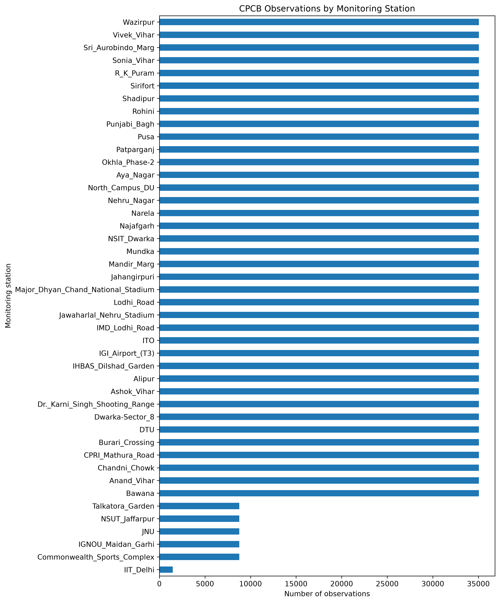
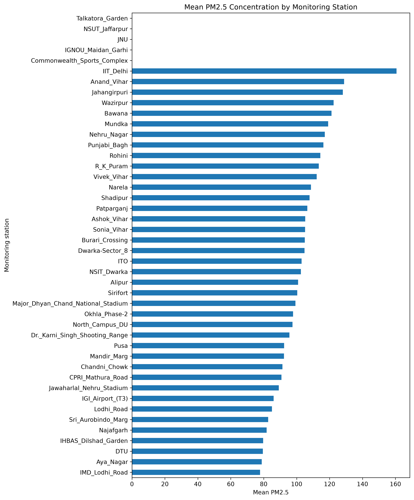
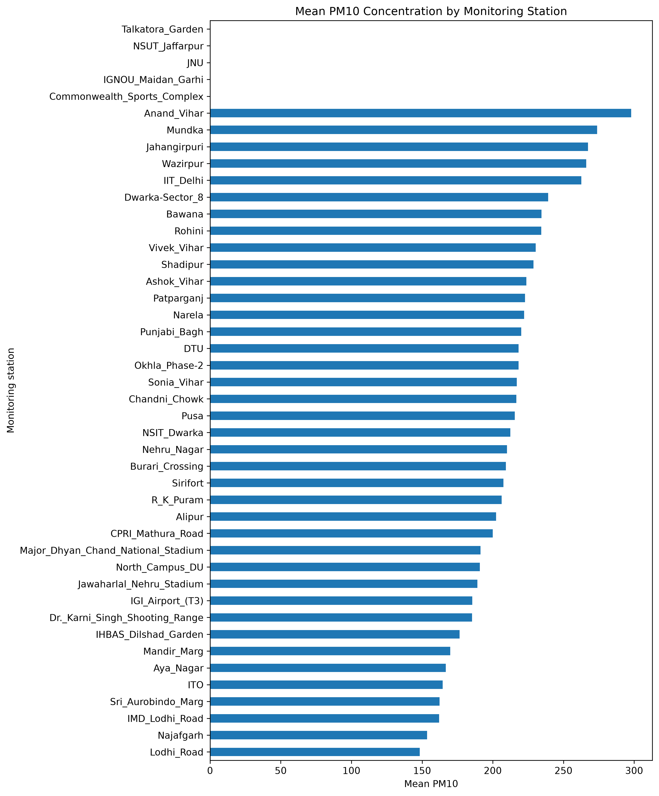
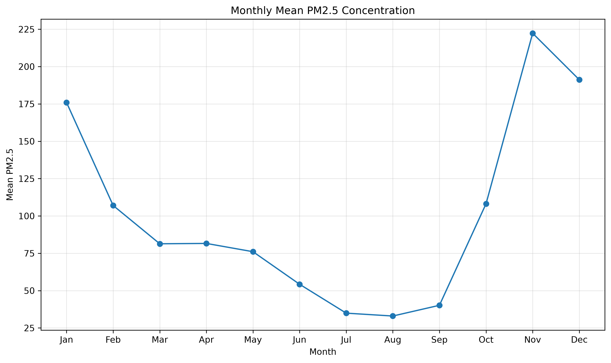
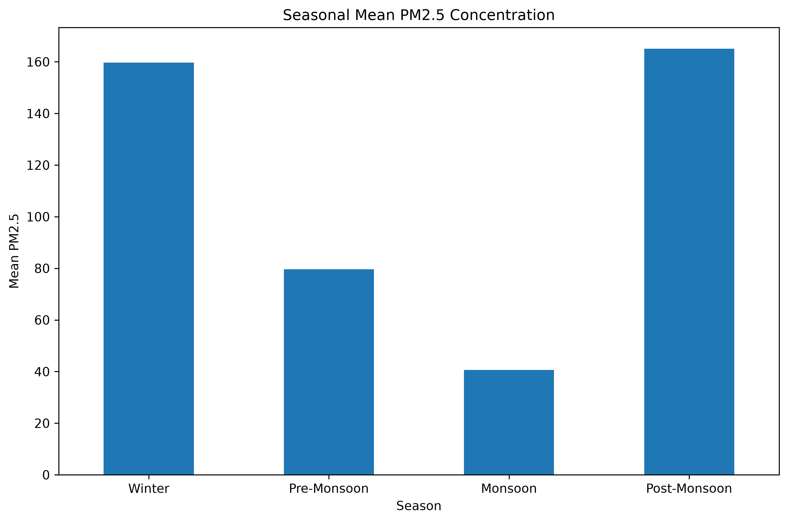
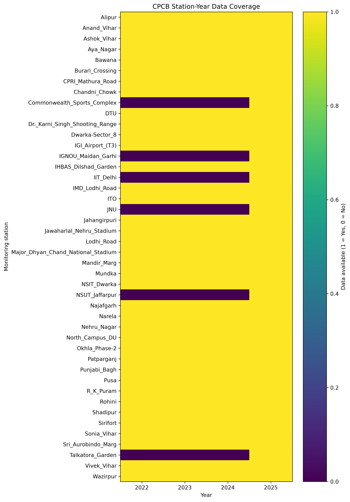

EDA 01
Station Data Coverage
Number of observations contributed by each monitoring station.
A combined research dashboard presenting the CPCB dataset audit, preprocessing status, station-year coverage and exploratory visualizations for Delhi monitoring stations.
The audit found 158 readable station-year datasets out of 180 expected combinations. Every available station-year currently contains PM2.5 and PM10 columns according to the audit output.








The 22 unavailable station-years are retained as a data-availability finding rather than being artificially filled. Missing files and missing observations inside an available file are treated as different issues. Extreme or suspicious pollutant observations should be investigated before exclusion; they should not be silently deleted.
The dataset has progressed from raw collection through systematic auditing, standardization and exploratory analysis. The next methodological stage is to characterize spatial and temporal patterns and then integrate meteorological and satellite-derived variables for the proposed spatial machine-learning framework.